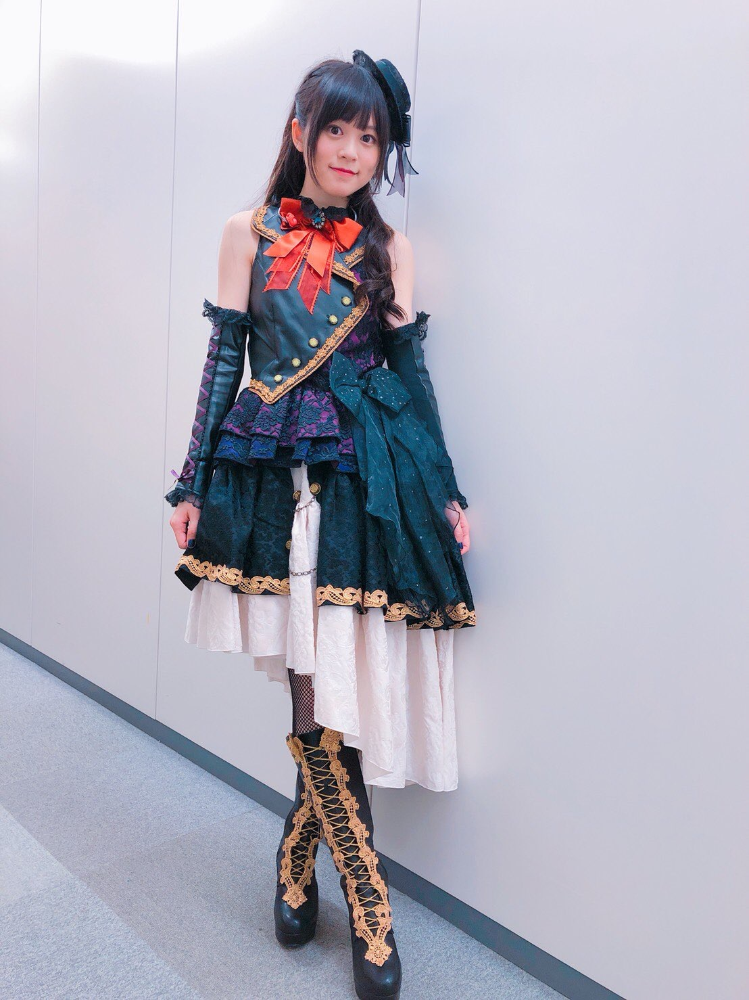

擔當：貝斯手
樂器：ESP BTL ROSELIA LISA
年級：高中三年級
生日：8月25日
血型：O型
星座：處女座
喜歡的東西： 筑前煮(一種當地日本新年料理)、蘸醋的食物
討厭的東西：一種綠色的果汁(？
原本從外表打扮的看起來很花哨 所以很容易被錯怪成比較天然搞不清狀況那型
實際上是友希那的超親友 友希那任何一點情緒波動都可以察覺
也擅長照顧、關心別人所以朋友很多
也是Roselia的精神支柱
真人Roselia樂團：中島由貴

為Roselia貝斯手，同時為今井莉莎配音
特技是貝斯和舞蹈
興趣是遊戲、舞蹈和動漫歌曲鑑賞
小學及初中時代身為雜誌的模特活躍，2014年在國民聲優大賞當中獲得大賞
吃拉麵非常快，自稱拉麵是飲料